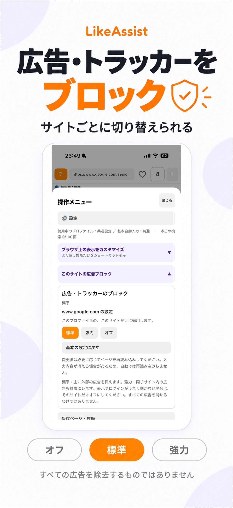
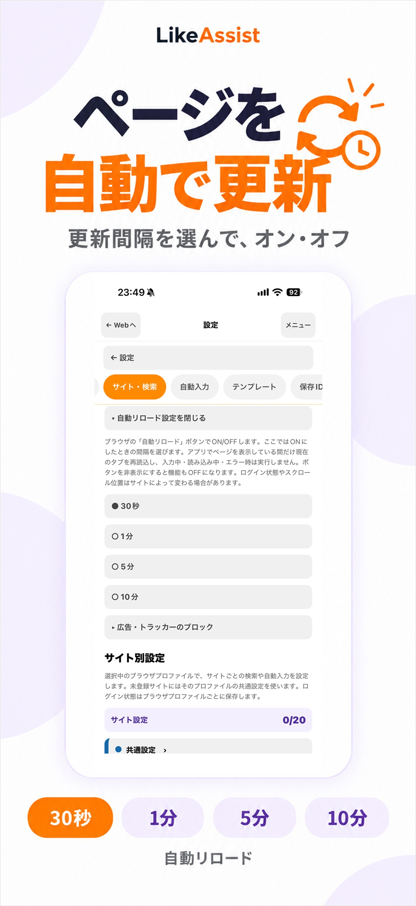
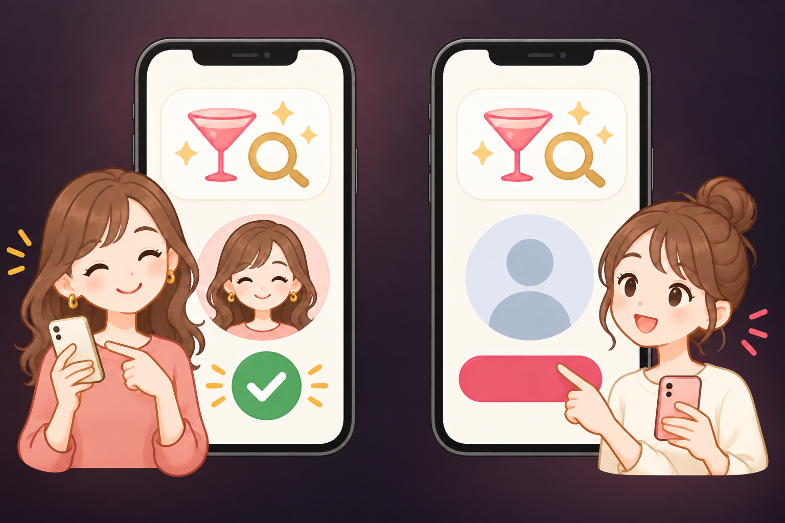

「イイネ」ボタン、どこ？
ページを開いて、押したいリンクを探す。見つからないと、また上からスクロール。毎回これ。
帰ったらヘトヘトなのに、いいねの場所を探して、
同じ挨拶をまた手打ちして、ページを何度も行ったり来たり。
LikeAssistは、そんな毎日の操作の手間だけをアシストします。
※ いいね・送信は、内容を確認してご自身で行います。
毎日の"いいね周り"で
ひとつずつは小さなこと。でも、繰り返すと地味にしんどい。
ページを開いて、押したいリンクを探す。見つからないと、また上からスクロール。毎回これ。
「ブログ見ました♡」「応援してます！」…毎回打つのめんどくさいけど、手を抜けない。
ブログ→一覧→ブログ…行き来してるうちに、どこまでやったか分からなくなる。
がんばるあなたの、小さな味方。
いつものWebページを使いやすくする、iPhone向けブラウザです。
✦ LikeAssistでできること
探したい言葉を登録しておけば、ページ内のボタンやリンクをパッと見つけて移動。長いページをスクロールして探し回る手間が減ります。

「ブログ見ました♡」「応援してます！」よく使う文章をテンプレートに保存。使うときに選んで入力欄へ挿入し、内容を確認してから送信。

ブログと一覧ページを、タブを選んで移動。ページを閉じて開き直す回数を減らせます。どこまでやったか分からなくなる問題も軽減。

✦ バージョン1.1.7のアップデート
バージョン1.1.7で追加・改善された内容です。App Storeで最新バージョンをご確認ください。
広告・トラッカーのブロックを「オフ・標準・強力」から選べます。サイトごとにも設定でき、表示やログインに問題がある場合は、そのサイトだけオフにできます。すべての広告を消す機能ではありません。

30秒・1分・5分・10分から間隔を選び、ブラウザのボタンでオン・オフを切り替えます。ページ全体の撮影やプレビュー中は、自動更新を停止します。

縦に長いページも撮影し、保存前にプレビューで確認できます。表示内容や個人情報が写る場合があるため、保存・共有前にご確認ください。
登録した読みを入力欄に合わせてひらがな・カタカナで入力します。携帯電話番号とその他の電話番号も分けて登録できます。
月額と同じPro機能を使える年額プランを追加しました。日本向け参考価格は9,000円／年です。実際の価格と更新条件は購入画面でご確認ください。
更新内容のお知らせは、一度読み込むとオフラインでも表示。診断情報の確認や、ウィンドウ切替・設定ファイル取り込みの操作も改善します。
※ 機能から想定した利用シーンの例です。利用者の体験談ではありません。
身支度の合間に、気になるブログを確認したいときに。
一日のいいね周りを、見たいページから自分のペースで進めたいときに。
LikeAssistをインストールしたら、ポケパラで「イイネ」「いいね」を探す設定を、以下の4ステップで追加できます。
LikeAssistのブラウザで設定ページを開きます。下のボタンからも開けます。
JSONページが開いたら、アドレス欄付近の「取り込む」をタップします。「ポケパラ」「pokepara.jp」と表示されていることを確認してください。
登録済みのプロファイルを選ぶか、新しく作成し、「確認して保存」を押します。
ポケパラのページを開き、追加された「イイネを探す」ボタンを使います。

左：登録済みのプロファイル
ログイン状態を保ったまま設定を追加できます。
右：新しいプロファイル
ポケパラにログインし直します。新規作成はiOS 17以降で利用できます。
LikeAssistのブラウザで開いてください
ポケパラ用の設定を開く
現在のログイン状態を保ったまま設定を追加します。
新しいプロファイルでは、ポケパラにログインし直します。
がんばる時間を、もっと自分に。
✦ App StoreでLikeAssistを見る ↗